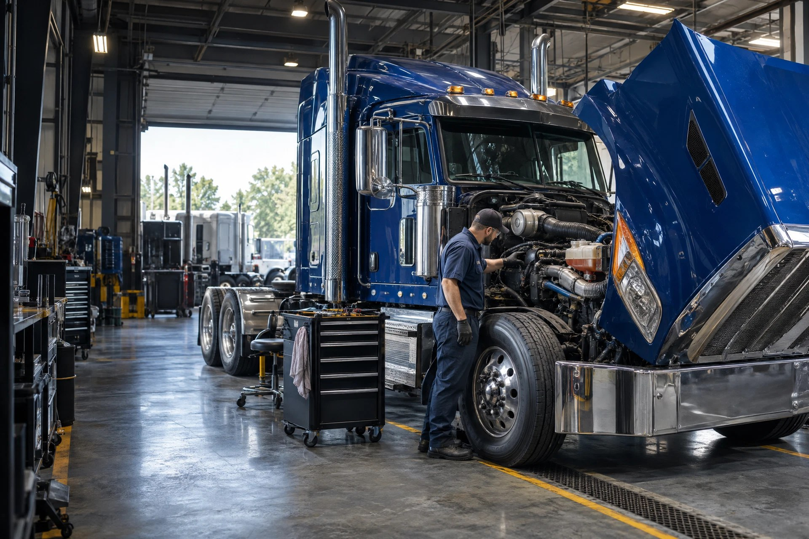

Air Dryer
Does: Removes moisture/contamination from compressed air.
Look for: Large vertical canister on a valve/base with several air lines.
MORE AIR BRAKE PARTS →
Parts visual library: Illustrative workshop photography supports system recognition. It is not a vehicle-specific fitment or location reference.
Don't know the name? Pick the system. See the part. Understand the job. Then diagnose it.
Does: Removes moisture/contamination from compressed air.
Look for: Large vertical canister on a valve/base with several air lines.
MORE AIR BRAKE PARTS →Does: Transfers torque while allowing driveline angle movement.
Look for: Cross-shaped joint with four bearing caps between yokes.
MORE DRIVETRAIN PARTS →Does: Captures particulate matter in diesel exhaust.
Look for: Large stainless canister in aftertreatment assembly.
MORE EMISSIONS PARTS →Does: Cranks the engine.
Look for: Large cylindrical motor with smaller solenoid alongside.
MORE ELECTRICAL PARTS →Does: Compresses intake air using exhaust energy.
Look for: Snail-shaped housings connected to intake and exhaust.
MORE ENGINE PARTS →Does: Keeps wheel-end lubricant in the hub.
Look for: Large circular rubber/metal seal inside hub around spindle.
MORE WHEEL END PARTS →Does: Adds/exhausts air to maintain ride height.
Look for: Small air valve with lines and a long linkage arm.
MORE SUSPENSION PARTS →Does: Transfers engine heat from coolant to airflow.
Look for: Large finned heat exchanger at the front cooling stack.
MORE COOLING PARTS →Does: Couples tractor to trailer kingpin.
Look for: Large greased horseshoe-shaped plate behind cab.
MORE FIFTH WHEEL PARTS →